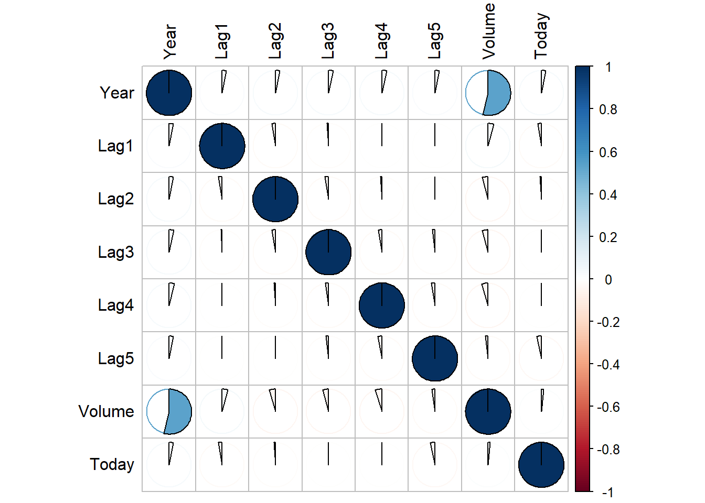
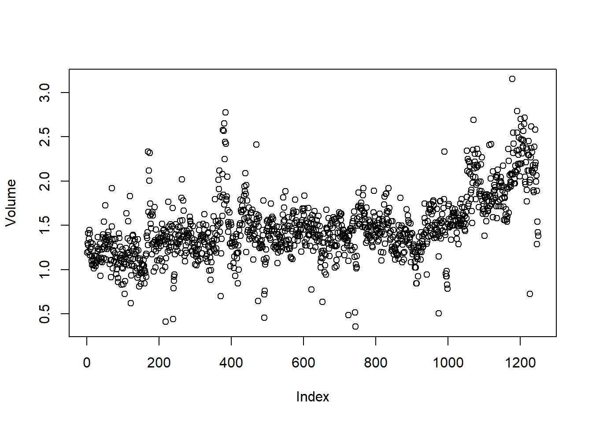
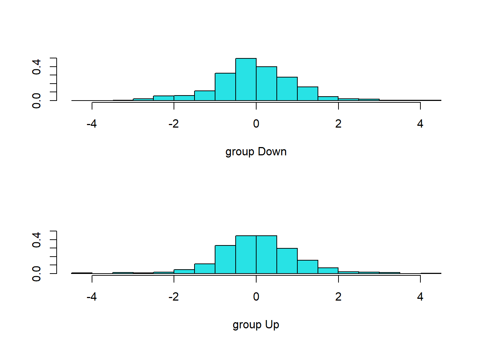
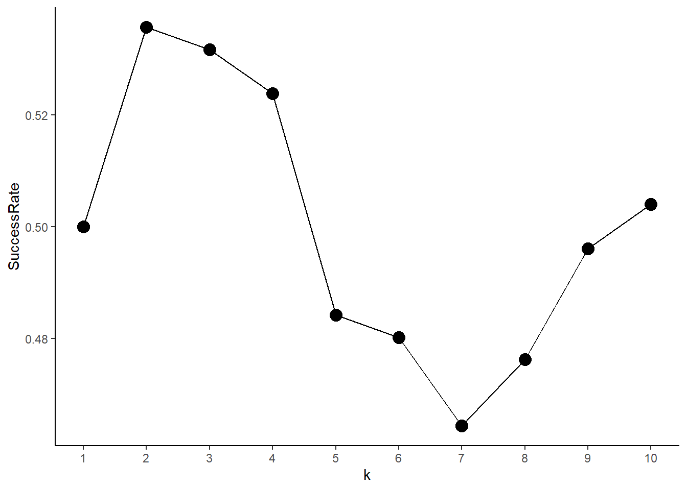

knitr::opts_chunk$set(echo = TRUE)
library(ISLR)
library(corrplot)
library(tidyverse)Chapter 4 (Lab)
Classification
4.6.1 The Stock Market Data
data("Smarket")
names(Smarket)[1] "Year" "Lag1" "Lag2" "Lag3" "Lag4" "Lag5"
[7] "Volume" "Today" "Direction"dim(Smarket)[1] 1250 9summary(Smarket) Year Lag1 Lag2 Lag3
Min. :2001 Min. :-4.922000 Min. :-4.922000 Min. :-4.922000
1st Qu.:2002 1st Qu.:-0.639500 1st Qu.:-0.639500 1st Qu.:-0.640000
Median :2003 Median : 0.039000 Median : 0.039000 Median : 0.038500
Mean :2003 Mean : 0.003834 Mean : 0.003919 Mean : 0.001716
3rd Qu.:2004 3rd Qu.: 0.596750 3rd Qu.: 0.596750 3rd Qu.: 0.596750
Max. :2005 Max. : 5.733000 Max. : 5.733000 Max. : 5.733000
Lag4 Lag5 Volume Today
Min. :-4.922000 Min. :-4.92200 Min. :0.3561 Min. :-4.922000
1st Qu.:-0.640000 1st Qu.:-0.64000 1st Qu.:1.2574 1st Qu.:-0.639500
Median : 0.038500 Median : 0.03850 Median :1.4229 Median : 0.038500
Mean : 0.001636 Mean : 0.00561 Mean :1.4783 Mean : 0.003138
3rd Qu.: 0.596750 3rd Qu.: 0.59700 3rd Qu.:1.6417 3rd Qu.: 0.596750
Max. : 5.733000 Max. : 5.73300 Max. :3.1525 Max. : 5.733000
Direction
Down:602
Up :648
pairs(Smarket)
round(cor(Smarket[,-9]),3) Year Lag1 Lag2 Lag3 Lag4 Lag5 Volume Today
Year 1.000 0.030 0.031 0.033 0.036 0.030 0.539 0.030
Lag1 0.030 1.000 -0.026 -0.011 -0.003 -0.006 0.041 -0.026
Lag2 0.031 -0.026 1.000 -0.026 -0.011 -0.004 -0.043 -0.010
Lag3 0.033 -0.011 -0.026 1.000 -0.024 -0.019 -0.042 -0.002
Lag4 0.036 -0.003 -0.011 -0.024 1.000 -0.027 -0.048 -0.007
Lag5 0.030 -0.006 -0.004 -0.019 -0.027 1.000 -0.022 -0.035
Volume 0.539 0.041 -0.043 -0.042 -0.048 -0.022 1.000 0.015
Today 0.030 -0.026 -0.010 -0.002 -0.007 -0.035 0.015 1.000corrplot(cor(Smarket[,-9]), method = "pie", tl.col = "black")
attach(Smarket)
plot(Volume)
4.6.2 Logidtic Regression
Fitting a logistic regression model using glm with family=binomial argument.
fit.glm <- glm(Direction ~ Lag1+Lag2+Lag3+Lag4+Lag5+Volume, family = binomial, data=Smarket)
summary(fit.glm)
Call:
glm(formula = Direction ~ Lag1 + Lag2 + Lag3 + Lag4 + Lag5 +
Volume, family = binomial, data = Smarket)
Coefficients:
Estimate Std. Error z value Pr(>|z|)
(Intercept) -0.126000 0.240736 -0.523 0.601
Lag1 -0.073074 0.050167 -1.457 0.145
Lag2 -0.042301 0.050086 -0.845 0.398
Lag3 0.011085 0.049939 0.222 0.824
Lag4 0.009359 0.049974 0.187 0.851
Lag5 0.010313 0.049511 0.208 0.835
Volume 0.135441 0.158360 0.855 0.392
(Dispersion parameter for binomial family taken to be 1)
Null deviance: 1731.2 on 1249 degrees of freedom
Residual deviance: 1727.6 on 1243 degrees of freedom
AIC: 1741.6
Number of Fisher Scoring iterations: 3The coefficients for each predictor and the respective p-values are displayed as follows:
coef(fit.glm) (Intercept) Lag1 Lag2 Lag3 Lag4 Lag5
-0.126000257 -0.073073746 -0.042301344 0.011085108 0.009358938 0.010313068
Volume
0.135440659 summary(fit.glm)$coef Estimate Std. Error z value Pr(>|z|)
(Intercept) -0.126000257 0.24073574 -0.5233966 0.6006983
Lag1 -0.073073746 0.05016739 -1.4565986 0.1452272
Lag2 -0.042301344 0.05008605 -0.8445733 0.3983491
Lag3 0.011085108 0.04993854 0.2219750 0.8243333
Lag4 0.009358938 0.04997413 0.1872757 0.8514445
Lag5 0.010313068 0.04951146 0.2082966 0.8349974
Volume 0.135440659 0.15835970 0.8552723 0.3924004data.frame(Coefficient = coef(fit.glm), pValue = summary(fit.glm)$coef[,"Pr(>|z|)"]) Coefficient pValue
(Intercept) -0.126000257 0.6006983
Lag1 -0.073073746 0.1452272
Lag2 -0.042301344 0.3983491
Lag3 0.011085108 0.8243333
Lag4 0.009358938 0.8514445
Lag5 0.010313068 0.8349974
Volume 0.135440659 0.3924004Now we use predict() function to create predicted values for Direction using the training data itself.
prob.glm <- predict(fit.glm, type="response")
prob.glm[1:10] 1 2 3 4 5 6 7 8
0.5070841 0.4814679 0.4811388 0.5152224 0.5107812 0.5069565 0.4926509 0.5092292
9 10
0.5176135 0.4888378 contrasts(Direction) Up
Down 0
Up 1Now, we convert the probabilities of Up movement in the vector of predicted response probsglm into categorical class labels Up or Down.
pred.glm <- rep("Down", nrow(Smarket))
pred.glm[prob.glm > 0.5] <- "Up"
table(pred.glm, Direction) Direction
pred.glm Down Up
Down 145 141
Up 457 507mean(pred.glm == Direction)[1] 0.5216mean(pred.glm != Direction)[1] 0.4784Thus, the training error rate is 47.84% ( mean(pred.glm != Direction)*100 ).
Now, we create a training subset and a testing subset of the Smarket data by using a Boolean Vector called train which is TRUE for values of Year<2005. Thus, our training data set becomes Smarket[train,], while the testing data set is Smarket[!train]. Further, we create a training data set Smarket2005 and a new vector Direction2005 so that we can use them later to compute test error rate.
train <- Year < 2005
table(train)train
FALSE TRUE
252 998 Smarket2005 <- Smarket[!train,]
Direction2005 <- Direction[!train]Now we fit the logistic regression model on training data set, create a vector of predicted probabilities, then create a prediction vector of class labels and finally use the test data set to calculate test error rate.
fit.glm <- glm(Direction ~ Lag1+Lag2+Lag3+Lag4+Lag5+Volume, data=Smarket,
family = binomial, subset = train)
prob.glm <- predict(fit.glm, newdata = Smarket2005, type="response")
pred.glm <- rep("Down", nrow(Smarket2005))
pred.glm[prob.glm > 0.5] <- "Up"
table(pred.glm, Direction2005) Direction2005
pred.glm Down Up
Down 77 97
Up 34 44mean(pred.glm != Direction2005)[1] 0.5198413Thus, the test error rate is nearly 52%, ( round(mean(pred.glm != Direction2005),2)*100 ), which is even worse than random guessing.
Now, we redo all the steps using only some predictors (Lag1 and Lag2) which seem somewhat related to the response Direction and hope to have a model with lower test error rate.
fit.glm <- glm(Direction ~ Lag1 + Lag2, data=Smarket,
family = binomial, subset=train)
prob.glm <- predict(fit.glm, newdata = Smarket2005, type="response")
pred.glm <- rep("Down", nrow(Smarket2005))
pred.glm[prob.glm > 0.5] <- "Up"
table(pred.glm, Direction2005) Direction2005
pred.glm Down Up
Down 35 35
Up 76 106# The test accuracy of the fitted model is
round(mean(pred.glm == Direction2005),2)[1] 0.56# Test error rate is
mean(pred.glm != Direction2005)[1] 0.4404762Thus, with fewer but relevant predictors, the test error rate is reduced to 44.04% ( mean(pred.glm != Direction2005)*100 % ). This is because the irrelevant predictors lead to increased uncertainty in the estimates of coefficients and lead to overall poor prediction.
Lastly, we predict the probability of market Direction Up when the values of Lag1 and Lag2 are specified:—
predict(fit.glm, type="response",
newdata = data.frame(Lag1 = c(1.2, 1.5), Lag2 = c(1.1, -0.8))) 1 2
0.4791462 0.4960939 4.6.3 Linear Discriminant Analysis
For linear discriminant analysis, we use lda function from the MASS library. We fit the model for observations from 2001 to 2004, and use 2005 as testing data set.
library(MASS)fit.lda <- lda(Direction ~ Lag1+Lag2, data=Smarket, subset=train)
fit.ldaCall:
lda(Direction ~ Lag1 + Lag2, data = Smarket, subset = train)
Prior probabilities of groups:
Down Up
0.491984 0.508016
Group means:
Lag1 Lag2
Down 0.04279022 0.03389409
Up -0.03954635 -0.03132544
Coefficients of linear discriminants:
LD1
Lag1 -0.6420190
Lag2 -0.5135293plot(fit.lda)
pred.lda <- predict(fit.lda, newdata = Smarket2005)
names(pred.lda)[1] "class" "posterior" "x" Thus, the predict function creates a list of objects:
- class : this contains the predicted category of the response by the LDA. - posterior : a matrix containing posterior probabilities of response being in each category (columns) for all observations (rows). The colnames(pred.lda$posterior) shows us the categories for the response i.e. Down and Up. - x : a matrix containing the linear discriminants.
Further, the following commands shows what the model predicts for the year 2005:
table(pred.lda$class)
Down Up
70 182 We can compare the predicted results with the actual market movement in 2005 as follows:
pred.class <- pred.lda$class
table(pred.class, Direction2005) Direction2005
pred.class Down Up
Down 35 35
Up 76 106The success rate and error rate on the test data set is calculated as follows:
# Test data set success rate
round(mean(pred.class == Direction2005),2)[1] 0.56# Failure rate
round(mean(pred.class != Direction2005),2)[1] 0.44Now, we compare the results using thresholds of posterior probability as 50% and 90%.
# Since the column 1 i.e. [,1] of `pred.lda$posterior` matrix represents category `Down`
sum(pred.lda$posterior[,1] >= 0.5)[1] 70sum(pred.lda$posterior[,1] <= 0.5)[1] 182# This is same as
table(pred.lda$class)
Down Up
70 182 # Now using 90% proability of `Down` as cut-off
sum(pred.lda$posterior[,1] >= 0.9)[1] 0Thus, there is no day in 2005 when the probability of market falling is 90% or more. Lastly, some random code to re-verify that column 1 of pred.lda$posterior matrix is for category Down:
pred.lda$posterior[1:20,1]
pred.class[1:20]4.6.4 Quadratic Discriminant Analysis
Here, we use the qda function in the MASS library to fit a Quadratic Discriminant Analysis model to the Smarket data in an attempt to predict Direction from Lag1 and Lag2. Once again, we split the data set into a training data and a testing data. Then we calculate the error rate and success rate of the QDA model.
fit.qda <- qda(Direction~Lag1+Lag2, data=Smarket, subset=train)
fit.qdaCall:
qda(Direction ~ Lag1 + Lag2, data = Smarket, subset = train)
Prior probabilities of groups:
Down Up
0.491984 0.508016
Group means:
Lag1 Lag2
Down 0.04279022 0.03389409
Up -0.03954635 -0.03132544pred.class <- predict(fit.qda, newdata = Smarket2005)$class
table(pred.class, Direction2005) Direction2005
pred.class Down Up
Down 30 20
Up 81 121# Success Rate of QDA model
round(mean(pred.class == Direction2005),3)[1] 0.599# Test Error rate in QDA
round(mean(pred.class != Direction2005),3)[1] 0.401Thus, it is evident that the QDA model captures the true relationship more accurately than the linear models, namely LDA and Logistic Regression.
4.6.5 K-Nearest Neighbors
We now use the K-Nearest Neighbors approach with \(K=1\) and \(K=3\) to predict market movement Direction in 2005 test data set after training the knn classifier on 2001-2004 training data set. Additionally we need to create training and test matrices of predictors, and training response vector. The function used is knn from the class library.
library(class)
set.seed(1)
train.X <- cbind(Smarket$Lag1, Smarket$Lag2)[train,]
test.X <- cbind(Smarket$Lag1, Smarket$Lag2)[!train,]
train.Direction <- Direction[train]
pred.knn <- knn(train = train.X, test = test.X, cl = train.Direction, k = 1)
table(pred.knn, Direction2005) Direction2005
pred.knn Down Up
Down 43 58
Up 68 83# Success rate in KNN wit k = 1
mean(pred.knn == Direction2005)[1] 0.5# Using k=3 in KNN
pred.knn <- knn(train = train.X, test = test.X, cl = train.Direction, k = 3)
table(pred.knn, Direction2005) Direction2005
pred.knn Down Up
Down 48 54
Up 63 87# Success rate in KNN wit k = 1
mean(pred.knn == Direction2005)[1] 0.5357143Lastly, as a fun exercise, we create a graph depicting success rate as a function of \(k\), when \(k\) varies from 1 to 10.
result <- data.frame(k = 1:10, SuccessRate = rep(NA, 10))
for (i in 1:10){
pred.knn <- knn(train = train.X, test = test.X, cl = train.Direction, k = i)
result$SuccessRate[i] <- mean(pred.knn == Direction2005)
}
ggplot(result)+
geom_line(aes(x=k, y=SuccessRate)) +
geom_point(aes(x=k, y=SuccessRate), col="black", size=4)+
theme_classic() +
scale_x_continuous(breaks = 1:10)
4.6.6 An application to Caravan Insurance Data
Now, we use the Caravan data set to predict the Purchase variable, i.e. whether a person purchases an insurance for his/her Caravan based on 85 other demographic predictors. We are not interested in overall test error rate, but rather in success rate of purchasing insurance amongst predicted persons. That is, what percentage of persons predicted by the model to purchase Insurance actually did purchase insurance. This will allow a company to cut costs in selling policies. We use five different approaches : 1) KNN with \(k=1\), 2) KNN with \(k=3\), 3) KNN with \(k=5\), 4) Logistic regression with cut off probability of 0.5 for predicting Purchase and 5) Logistic regression with cut off probability of 0.25 for predicting Purchase.
data("Caravan")
attach(Caravan)
test <- 1:1000
# Calculating the fraction of Insurance Purchases in general
round(summary(Purchase)[2]/(length(Purchase)),4) Yes
0.0598 # Standardizing the data set to implement KNN properly
standardized.X <- scale(Caravan[,-86])
train.X <- standardized.X[-test,]
test.X <- standardized.X[test,]
train.y <- Caravan$Purchase[-test]
test.y <- Caravan$Purchase[test]
set.seed(1)
pred.knn.1 <- knn(train.X, test.X, train.y, k = 1)
ConMatrix <- table(pred.knn.1, test.y)
s1 <- ConMatrix[2,2] / (ConMatrix[2,1] + ConMatrix[2,2])
pred.knn.3 <- knn(train.X, test.X, train.y, k = 3)
ConMatrix <- table(pred.knn.3, test.y)
s2 <- ConMatrix[2,2] / (ConMatrix[2,1] + ConMatrix[2,2])
pred.knn.5 <- knn(train.X, test.X, train.y, k = 5)
ConMatrix <- table(pred.knn.5, test.y)
s3 <- ConMatrix[2,2] / (ConMatrix[2,1] + ConMatrix[2,2])
fit.glm.1 <- glm(Purchase ~ ., data=Caravan, family = binomial, subset = -test)
prob.glm.1 <- predict(fit.glm.1, newdata = Caravan[test,], type="response")
pred.glm.1 <- rep("No", length(test))
pred.glm.1[prob.glm.1 > 0.5] <- "Yes"
ConMatrix <- table(pred.glm.1, test.y)
s4 <- ConMatrix[2,2] / (ConMatrix[2,1] + ConMatrix[2,2])
pred.glm.2 <- rep("No", length(test))
pred.glm.2[prob.glm.1 > 0.25] <- "Yes"
ConMatrix <- table(pred.glm.2, test.y)
s5 <- ConMatrix[2,2] / (ConMatrix[2,1] + ConMatrix[2,2])
data.frame(Model = c("KNN (k=1)", "KNN (k=3)", "KNN (k=5)", "Logit.Reg.,p=0.5", "Logit.Reg.,p=0.25"),
SuccessRate = round(c(s1, s2, s3, s4, s5)*100,1)) |>
kableExtra::kbl() |> kableExtra::kable_paper()| Model | SuccessRate |
|---|---|
| KNN (k=1) | 11.7 |
| KNN (k=3) | 19.2 |
| KNN (k=5) | 26.7 |
| Logit.Reg.,p=0.5 | 0.0 |
| Logit.Reg.,p=0.25 | 33.3 |